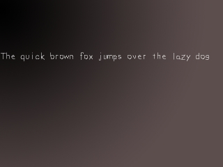

现在是时候渲染文本了。SDL本身不原生地支持TTF文件，所以你需要使用SDL_ttf扩展库。SDL_ttf是一个能从True Type字体中生成表面的的扩展库。SDL_ttf 可从此处下载。
要安装SDL_ttf，请查看前面的扩展库安装教程。安装SDL_ttf的方法与安装SDL_image极其相似，你仅需将前面教程中的SDL_image替换为SDL_ttf。
Linux/Unix 用户还需要链接freetype库。
本课介绍了SDL_ttf的基本用法。
//表面
SDL_Surface *background = NULL;
SDL_Surface *message = NULL;
SDL_Surface *screen = NULL;
//事件结构体
SDL_Event event;
//将要用到的字体
TTF_Font *font = NULL;
//字体的颜色
SDL_Color textColor = { 255, 255, 255 };
这里，我们有一些变量。其中包括了前面教程中所涉及的背景表面、窗口表面以及事件结构体。此外我们还有一个用于存储文本的“信息”表面。
这里还有一个新的数据类型
如果你想要了解更多有关
这里还有一个新的数据类型
TTF_Font，它是我们将要使用的字体，另外还有一个SDL_Color类型的变量，它是我们渲染文本时将要使用的颜色。在本课中，我们使用白色来渲染文本。如果你想要了解更多有关
SDL_Color 数据类型的信息，你可以查看SDL文档。bool init()
{
//初始化所有SDL子系统
if( SDL_Init( SDL_INIT_EVERYTHING ) == -1 )
{
return false;
}
//设置窗口
screen = SDL_SetVideoMode( SCREEN_WIDTH, SCREEN_HEIGHT, SCREEN_BPP, SDL_SWSURFACE );
//如果设置窗口出错
if( screen == NULL )
{
return false;
}
//初始化SDL_ttf
if( TTF_Init() == -1 )
{
return false;
}
//设置窗口标题
SDL_WM_SetCaption( "TTF Test", NULL );
//如果所有初始化都成功
return true;
}
这是我们的初始化函数。这和之前的很相似，只是这次我们还要初始化SDL_ttf。
SDL_ttf 是通过调用
SDL_ttf 是通过调用
TTF_Init()完成初始化的。如果期间出现错误，该函数会返回 -1。 TTF_Init() 必须在使用任何其他 SDL_ttf 的函数前被调用。bool load_files()
{
//加载背景图片
background = load_image( "background.png" );
//打开字体
font = TTF_OpenFont( "lazy.ttf", 28 );
//如果背景加载出错
if( background == NULL )
{
return false;
}
//如果字体加载出错
if( font == NULL )
{
return false;
}
//如果加载正常
return true;
}
这是文件加载函数。要加载 *.ttf 字体，必须使用
该函数的第一个参数是你想要打开的字体文件的文件名，第二个参数是你在打开字体文件时想要设定的字体大小。
如果加载字体时出现错误，
TTF_OpenFont() 函数。该函数的第一个参数是你想要打开的字体文件的文件名，第二个参数是你在打开字体文件时想要设定的字体大小。
如果加载字体时出现错误，
TTF_OpenFont() 会返回NULL。 //渲染文本
message = TTF_RenderText_Solid( font, "The quick brown fox jumps over the lazy dog", textColor );
//如果渲染文本时出现了错误
if( message == NULL )
{
return 1;
}
//将图像应用到窗口上
apply_surface( 0, 0, background, screen );
apply_surface( 0, 150, message, screen );
//更新窗口
if( SDL_Flip( screen ) == -1 )
{
return 1;
}
这里是main函数里的进行渲染的代码。
最快的渲染文本的方式是使用
该函数的第一个参数是字体，第二个参数是文本，第三个参数是颜色，它会使用这些来创建一个表面。
如果出现错误，该函数返回NULL。
当然还有别的渲染文本的方式，请到 SDL_ttf 文档中查看。对于部分Linux用户，
最快的渲染文本的方式是使用
TTF_RenderText_Solid()函数。
该函数的第一个参数是字体，第二个参数是文本，第三个参数是颜色，它会使用这些来创建一个表面。
如果出现错误，该函数返回NULL。
当然还有别的渲染文本的方式，请到 SDL_ttf 文档中查看。对于部分Linux用户，
TTF_RenderText_Solid()可能不能正常工作，此时请升级一下freetype（这是SDL_ttf 所依赖的库）和SDL_ttf。如果这样还不行，请改用TTF_RenderText_Shaded()。void clean_up()
{
//释放表面
SDL_FreeSurface( background );
SDL_FreeSurface( message );
//关闭用过的字体
TTF_CloseFont( font );
//退出SDL_ttf
TTF_Quit();
//退出SDL
SDL_Quit();
}